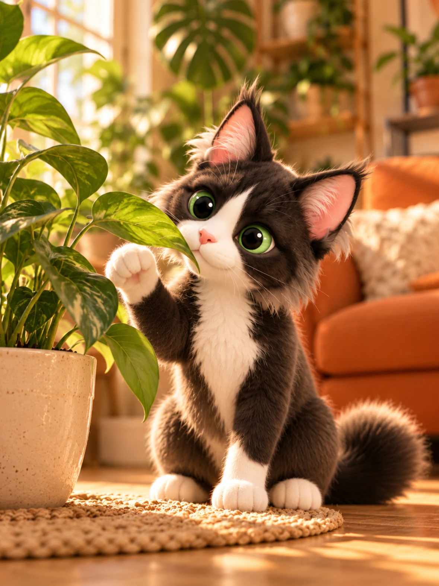

{{petName}}
Cat
Plant Explorer
{{jagerSub}}
This check only
Another cat
Cat
Bites, chews or eats plants · Touches or rubs against plants
Check a plant
Search by name or identify from a photo.
Camera access is off. You can still choose a photo from your library, turn the camera on in Settings, or search by name.